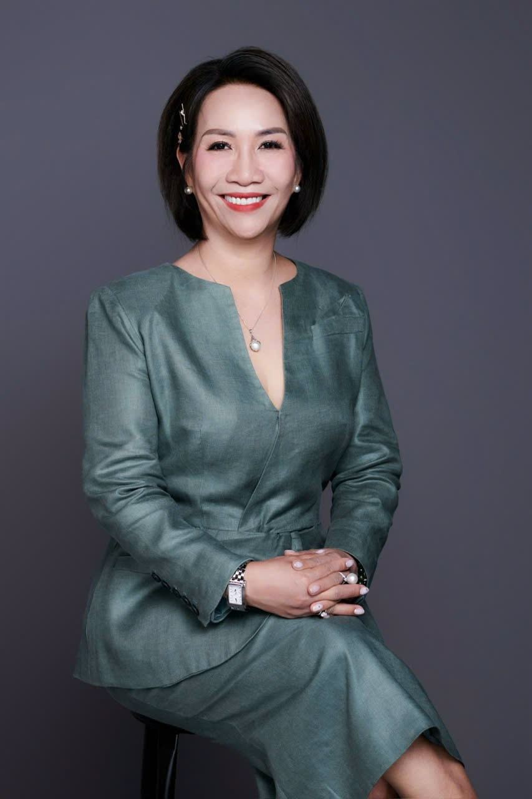
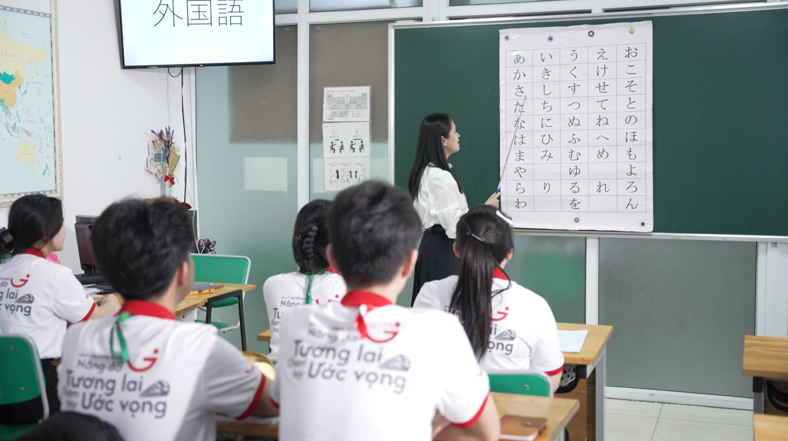
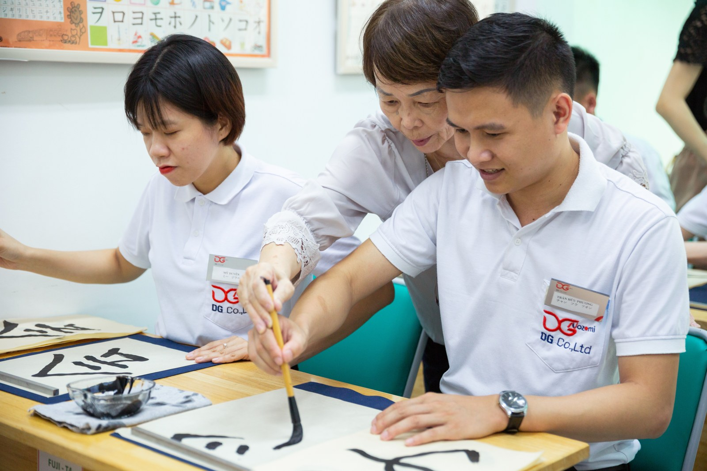
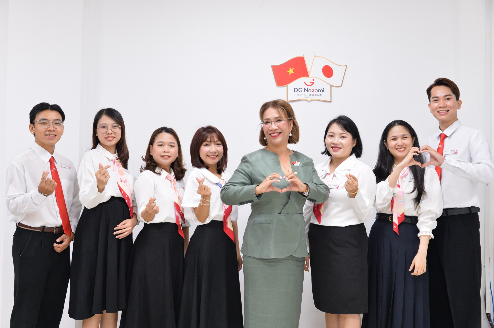
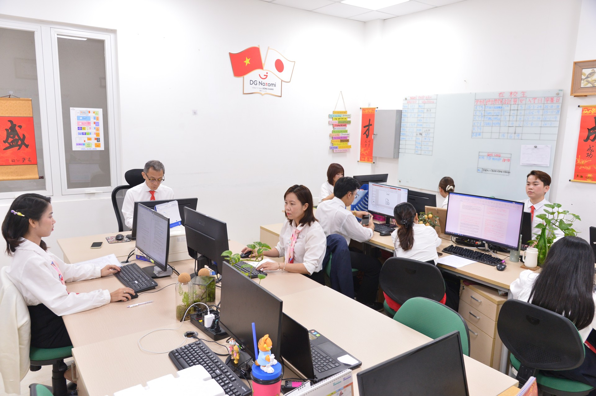
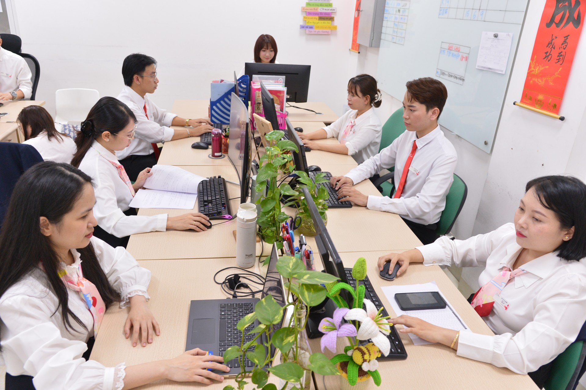
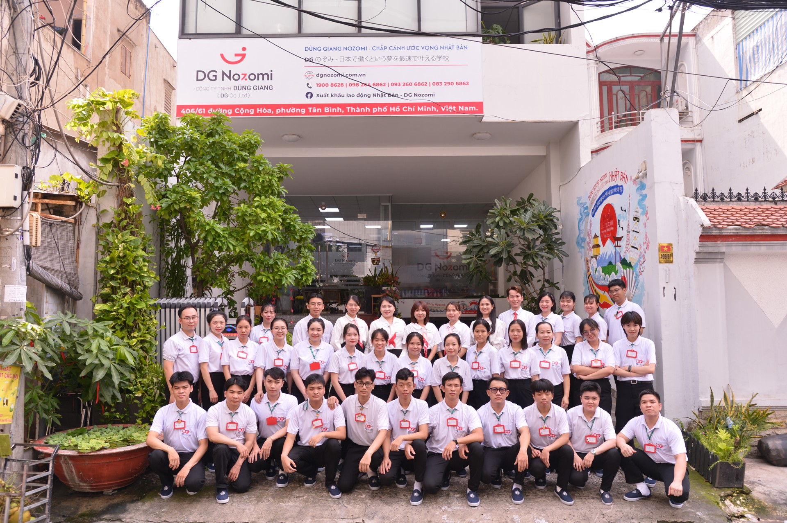
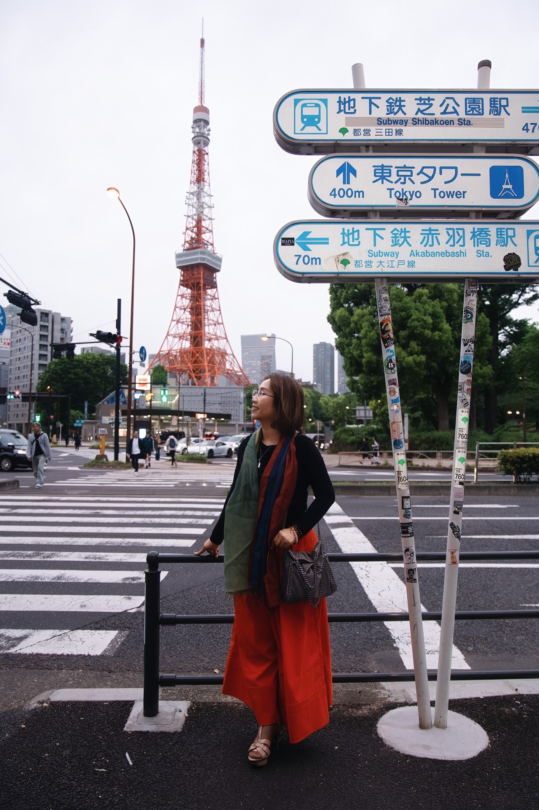
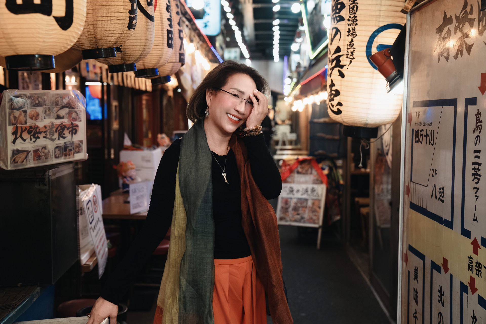

Mở cánh cửa
thị trường Việt Nam
Đại diện thương mại tại Việt Nam cho các tập đoàn Nhật Bản; kết nối thị trường, xúc tiến đầu tư và thúc đẩy hợp tác quốc tế.
Toyota · Marubeni · Itochu
VIỆT NAM ⟷ NHẬT BẢN
NHÀ SÁNG LẬP · NGƯỜI KẾT NỐI
Hơn ba thập kỷ vun đắp những kết nối giữa doanh nghiệp Nhật Bản và Việt Nam — bằng sự thấu hiểu thị trường và niềm tin vào giá trị con người.
Khám phá hành trình ↗
01 / CHÂN DUNG NHÀ SÁNG LẬP
Từ những dự án thương mại quốc tế đến hành trình chuẩn bị tương lai cho người trẻ Việt Nam.
Bà Nguyễn Thị Tường Hải là nhà sáng lập kiêm Giám đốc Công ty TNHH Dũng Giang và Công ty TNHH Đào tạo & Hướng nghiệp NOZOMI. Hơn 30 năm hoạt động trong thương mại quốc tế, xúc tiến đầu tư và phát triển nguồn nhân lực tạo nên nền tảng cho hành trình kết nối hai thị trường.
Trước khi phát triển lĩnh vực nhân lực, bà tham gia xây dựng các dự án hợp tác quốc tế trong công nghiệp, logistics, may mặc và vật liệu. Kinh nghiệm làm việc với doanh nghiệp Nhật trở thành cơ sở để đào tạo những con người có ngôn ngữ, kỹ năng và tác phong thực chất.
“Tôi chọn Nhật Bản là nơi khởi nguồn để Dũng Giang Nozomi ra đời.”Nguyễn Thị Tường Hải
02 / DẤU ẤN SỰ NGHIỆP
Từ một cơ hội hợp tác đến những chuỗi giá trị dài hạn. Những lĩnh vực tiêu biểu trong hành trình nghề nghiệp của bà Hải.
Đại diện thương mại tại Việt Nam cho các tập đoàn Nhật Bản; kết nối thị trường, xúc tiến đầu tư và thúc đẩy hợp tác quốc tế.
Đại diện thương mại cho các đơn vị logistics nhập khẩu thiết bị siêu trường, siêu trọng phục vụ Nhà máy Nhiệt điện Phú Mỹ.
Phát triển chuỗi cung ứng và các dự án may mặc cao cấp từ Nhật Bản vào Việt Nam; dẫn dắt phát triển dòng áo sơ mi không ủi cho Tổng Công ty May Việt Tiến.
Góp phần đưa hoạt động sản xuất túi khí ô tô Toyota về Việt Nam; nghiên cứu và phát triển vật liệu từ cây đay Việt Nam ứng dụng trong nội thất xe Lexus.
Mở hướng phát triển cho gỗ cao su, tràm và các vật liệu Việt Nam phục vụ lĩnh vực xây dựng, trang trí nội thất của doanh nghiệp Nhật.
Theo hồ sơ giới thiệu, Dũng Giang là đơn vị phái cử đầu tiên tại Việt Nam triển khai chương trình thực tập sinh kỹ năng ngành điều dưỡng – chăm sóc người cao tuổi tại Nhật Bản.
Các dấu ấn được biên tập từ hồ sơ người sáng lập do khách hàng cung cấp; tên doanh nghiệp thể hiện bối cảnh hợp tác trong sự nghiệp.
03 / DOANH NGHIỆP & SỨ MỆNH
Đào tạo con người và kết nối chăm sóc sức khỏe chủ động — hai hướng phát triển cùng đặt chất lượng sống và hợp tác Việt – Nhật ở trung tâm.
CÔNG TY TNHH ĐÀO TẠO & HƯỚNG NGHIỆP NOZOMI
Chuẩn bị nguồn nhân lực chất lượng cao cho doanh nghiệp Nhật tại Nhật Bản và Việt Nam. Chương trình kết hợp ngôn ngữ với văn hóa, tác phong, kỹ năng làm việc và khả năng thích nghi.

Hiểu để sử dụng, thay vì chỉ ghi nhớ.
Giao tiếp thực tế, gắn với môi trường làm việc.
Đúng giờ, trách nhiệm và tôn trọng tập thể.
Tự lập, thích nghi và phát triển lâu dài.
LỘ TRÌNH PHÁT TRIỂN
Bảng chữ cái, phát âm, chào hỏi và phương pháp tự học.
Khoảng 800 từ vựng, 100 chữ Hán; hội thoại và phỏng vấn.
Từ vựng công việc, xử lý tình huống và luyện thi theo nhu cầu.
Ôn tập N5–N4, luyện đọc hiểu và phản xạ giao tiếp.
Tiếng Nhật thực dụng, văn hóa công ty và kỹ năng sinh hoạt.
CÔNG TY CỔ PHẦN ENMUSUBI
ENMUSUBI là cầu nối Việt – Nhật trong chăm sóc sức khỏe chủ động và hợp tác doanh nghiệp. Từ tiếp nhận nhu cầu, kết nối cơ sở y tế đến hồ sơ, phiên dịch và hỗ trợ hành trình tại Nhật Bản.
Khám phá website ENMUSUBI ↗Cơ sở y tế thuộc hệ sinh thái Kihoukai được giới thiệu trong tài liệu.
Đơn vị chuyên môn được giới thiệu trong chương trình phổ thông.
Đơn vị nuôi cấy được giới thiệu trong chương trình chuyên sâu.
Giới thiệu chương trình Medicacell Type-I và các bước hỗ trợ theo tài liệu ENMUSUBI. Tiếp nhận nhu cầu, kết nối tư vấn và sắp xếp lịch trình tại Nhật.
Tài liệu giới thiệu chương trình tế bào tự thân ADSC, với các giai đoạn lấy mẫu, nuôi cấy và thực hiện theo kế hoạch của bác sĩ.
Nội dung giới thiệu chương trình; việc lựa chọn, chỉ định và quy trình chuyên môn do cơ sở y tế và bác sĩ đánh giá trực tiếp.
04 / CON NGƯỜI & HOẠT ĐỘNG
Những hình ảnh học viên trong hồ sơ NOZOMI: học ngôn ngữ, thực hành và trải nghiệm văn hóa Nhật Bản.

ĐỘI NGŨ & MÔI TRƯỜNG LÀM VIỆC
Từ người sáng lập đến đội ngũ vận hành, giảng dạy và học viên — những con người đang cùng xây dựng Dũng Giang, NOZOMI mỗi ngày.





NHẬT BẢN / MỘT MỐI GẮN BÓ
Nhật Bản là nơi bà Hải lựa chọn để khởi nguồn hành trình Dũng Giang Nozomi. Sự gắn bó với con người, văn hóa và môi trường làm việc tại đây tiếp nối trong định hướng phát triển nguồn nhân lực Việt – Nhật.

05 / VÌ CỘNG ĐỒNG
Bên cạnh hoạt động doanh nghiệp là những chương trình hướng đến sức khỏe cộng đồng và hành trang an toàn cho thế hệ trẻ.
Chương trình khám chữa bệnh và tặng quà miễn phí cho bà con có hoàn cảnh khó khăn, góp phần đưa sự chăm sóc y tế đến gần hơn với cộng đồng.
Xem video chương trìnhYouTube · Mang Y tế về gần nhà↗Chương trình giáo dục về sơ cấp cứu dành cho học sinh, giúp các em tiếp cận kiến thức và kỹ năng cần thiết để chủ động hơn trước những tình huống trong cuộc sống.
TRIẾT LÝ NGƯỜI SÁNG LẬP
Từ định hướng nghề nghiệp, rèn luyện kỹ năng đến nâng cao trình độ — đầu tư vào người trẻ cũng là đóng góp cho một xã hội Việt Nam khỏe mạnh.
NGUYỄN THỊ TƯỜNG HẢI06 / CÙNG MỞ RA CƠ HỘI
Trao đổi về đào tạo nhân lực, chăm sóc sức khỏe chủ động và hợp tác Việt – Nhật.
21 Đường số 63–TML, Phường Cát Lái,
Thành phố Hồ Chí Minh
Ms. Quyên · Tư vấn & kết nối